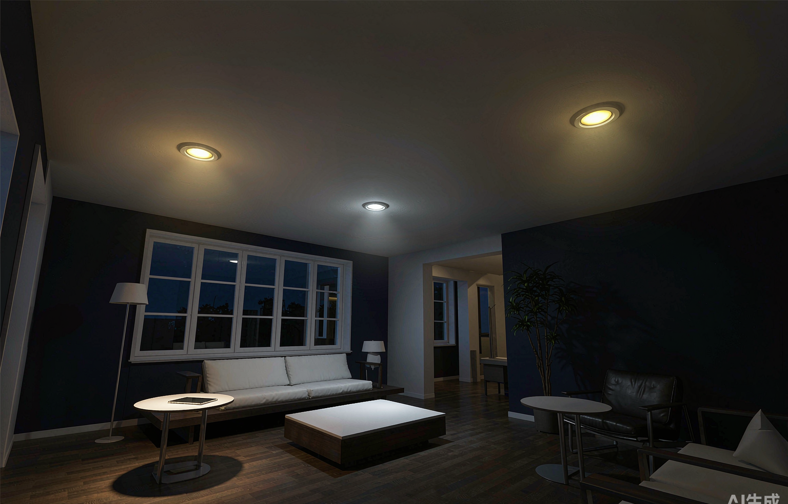
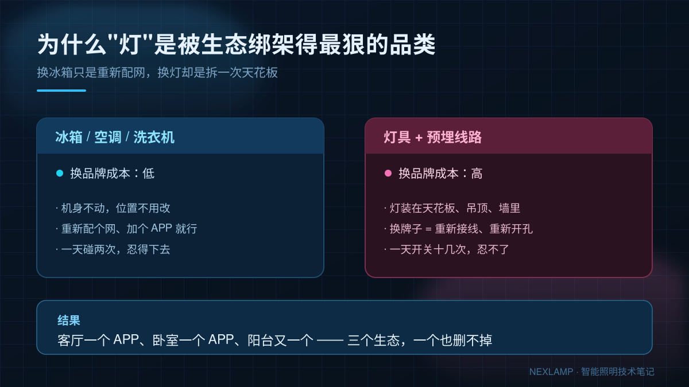
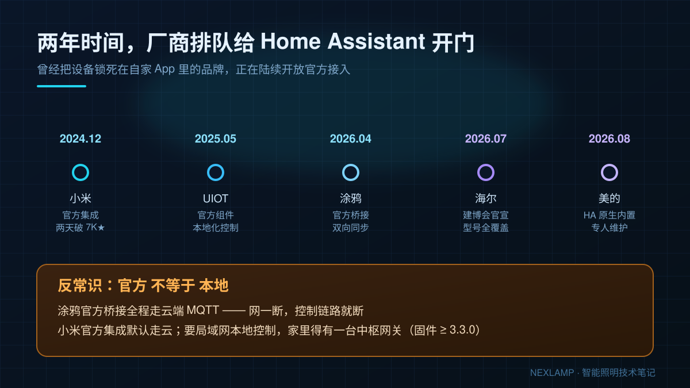
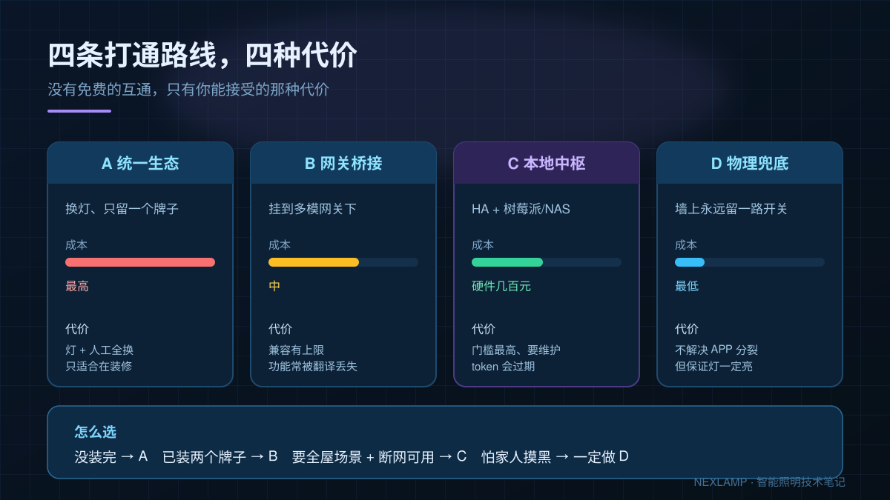

"客厅的灯用小爱，卧室的用涂鸦，阳台那盏是买灯时送的另一个牌子"——三个APP，一个也少不了。冰箱空调还能忍，反正一天碰两次；灯是一天要开关十几次的东西，偏偏它也是全家最贵、最拆不动的那部分。
这就是"生态绑架"的真实成本：不是不能换，是换灯的代价等于重做一次天花板。今天把2026年9月的最新格局和四条打通路线讲清楚，顺便说说买灯时怎么从源头避开这个坑。

一、好消息：互联互通强标在提速，但别指望它救你现在这盏灯
政策端今年确实在推：
| 时间 | 进展 |
|---|---|
| 2025年12月 | 4项智能家居互联互通国家标准发布 |
| 2026年3月1日 | 上述国标正式实施 |
| 2026年3月 | 工信部就《智能家居互联互通 第1部分：局域网接入要求》等6项强制性国标征求意见 |
| 2026年9月2日 | 商务部等8部门印发《促进智能家居消费行动方案》（商消费发〔2026〕148号），明确"加快制定实施智能家居互联互通等强制性国家标准"，并要求新建全装修住宅"户内设置基本智能产品" |
方向非常明确：从"推荐性"走向"强制性"。但请把时间轴算清楚——标准从发布、到厂商改硬件、到产品上市、再到你手里这盏灯通过固件升级获得互通能力，中间隔着两三年。等标准落地，不如现在花半小时规划。
二、厂商排队给 Home Assistant 开门，但有个反常识
真正在动手解决问题的，是开源阵营。这两年厂商排队的节奏是这样的：
- 2024年12月，小米发布官方 HA 集成，两天 GitHub Star 破 7000；
- 2025年5月，UIOT 超级智慧家发布官方组件；
- 2026年4月，涂鸦官方桥接上架；
- 2026年7月，海尔在广州建博会上官宣与 HA 的官方合作；
- 2026年8月，美的集成被 HA 原生内置。
听起来皆大欢喜？反常识在这里：官方，不等于本地。
涂鸦的官方桥接走的是云端 MQTT 双向同步——网络一断，控制链路就断。小米官方集成日常控制默认走小米云，想要断网可用的局域网控制，前提是家里有一台小米中枢网关（固件 ≥ 3.3.0）。也就是说，厂商开门了，但钥匙还在自己口袋里。
如果你的核心诉求是"断网也要能开关灯"，官方插件往往不是终点，而这恰恰是绝大多数人折腾智能家居的真正目的。

三、四条路，四种代价
| 路线 | 怎么做 | 成本 | 代价 |
|---|---|---|---|
| A. 统一到一个生态 | 只装一个牌子的灯，其余拆掉换新 | 最高（灯+人工） | 只适合正在装修，或只装了1~2个房间 |
| B. 多模网关桥接 | 把 Zigbee 灯重置后挂到目标生态的双模网关下 | 中（1台网关） | 有兼容上限，高级功能（渐变、场景、双色温曲线）经常被"翻译"丢失 |
| C. 本地中枢（HA + 树莓派/NAS） | 部署 Home Assistant，把各品牌灯统一接入，做跨品牌自动化 | 硬件几百元，门槛最高 | 要维护：厂商 token 会过期、社区插件可能失效，得有点折腾精神 |
| D. 物理兜底 | 墙面留智能开关、红外遥控、保留传统墙壁开关回路 | 最低 | 不解决"APP分裂"，但保证任何情况下灯都开得亮 |
一句判断：灯只是"能开关调色"，选B；要把灯跟传感器、窗帘、门锁串起来做场景，选C；刚装修或还在挑灯，直接用A并且把第四节的参数抄下来。

四、最省心的路：买灯时看三个硬件参数
作为做驱动的，我的建议很直接：别指望买回来再打通，选购时筛一遍能省三年麻烦。
- 协议是不是"标准协议"。标准 Zigbee 3.0、蓝牙 Mesh 标准版、Matter，都属于"可以换门进"；而打着"智能"旗号的 私有 2.4G 协议，出厂那一刻就注定只能进它自己那一个 APP，网关也救不了。
- 驱动能不能单独换。外置恒流/恒压驱动的灯，将来换驱动就能换协议；而光源和驱动灌胶一体的结构，换驱动等于换整灯——这是很多灯具厂商不会主动告诉你的细节。
- 有没有留"本地后路"。灯位有没有零线、网关位置留没留、驱动是否支持本地控制指令。工期里多埋一根线，比事后砸墙划算得多。
五、长话短说的决策树
- 房子还没装完 → 走A，认准标准协议驱动，零线到位；
- 已经装了两个牌子、想少花钱打通 → 先试B，两台设备实测功能是否完整；
- 想把灯拉进全屋场景、且在意断网可用 → 直接上C，配标准 Zigbee 3.0 灯具；
- 只求"别哪天全家开不了灯" → 无论如何都做D，墙面永远留一路物理控制。
生态会一直打架，但灯是自己家的。把标准协议、可换驱动、本地控制这三件事在下单前问清楚，比等一个三年后的强制国标实在得多。
本文由耐利普（Nexlamp）整理，专注涂鸦 Zigbee 智能照明与 LED 驱动电源。我们所有智能灯默认采用标准 Zigbee 3.0 协议 + 外置可换驱动，买的不是"某个 APP 的灯"，而是十年后还能换门进的灯。